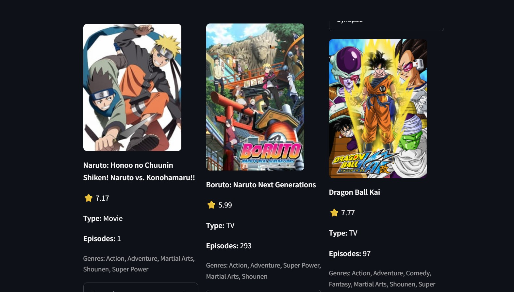
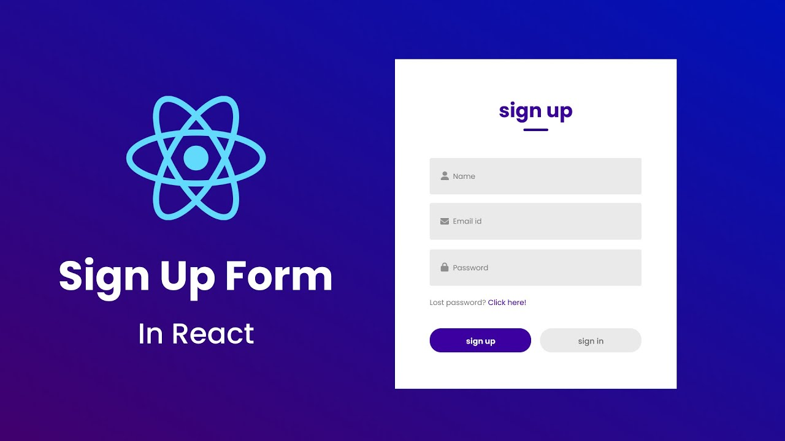
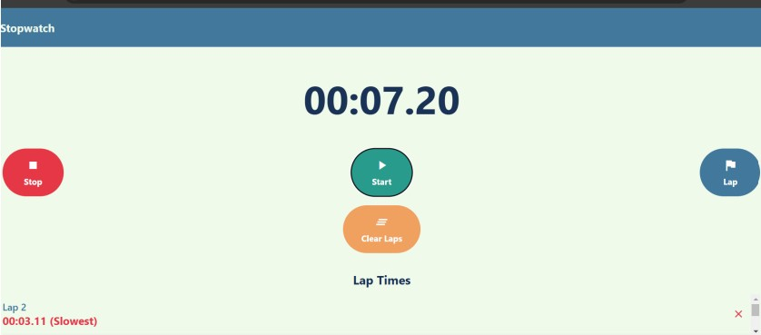

Built an interactive anime recommendation app using Python, Streamlit, and scikit-learn. Leveraged a
Kaggle dataset and pandas for data cleaning and preprocessing. Applied TF-IDF vectorization
and cosine similarity to recommend similar anime titles. Integrated the Jikan API to fetch anime posters, scores, and synopses, demonstrating skills in data cleaning, machine learning, and API integration.


A React-based login and registration page featuring a clean UI and responsive CSS styling. Includes intuitive email and password fields with built-in validation and error handling.
Perfect for web applications needing modern user authentication.

This project is a simple React-based stopwatch with lap functionality, built to practice
React concepts and state management. It allows users to start, stop, reset, and record lap times, displaying laps dynamically on the screen. The app is a great demonstration of using React hooks, conditional rendering, and managing an interactive user interface.